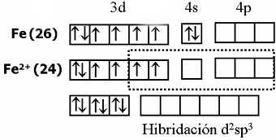

|
 El hierro ferroso se une mediante 6 enlaces coordinados a los cuatro nitrogenos del anillo de porfirina, al nitrogeno imidazólico de la His92 y al Oxígeno molecular. Esta página compara el grupo hemo con y sin oxígeno unido, junto con la hélice F de la globina. El hierro ferroso se coordina con los cuatro nitrógenos de la porfirina y con la histidina proximal; la sexta posición de coordinación es la que ocupa el oxígeno. |